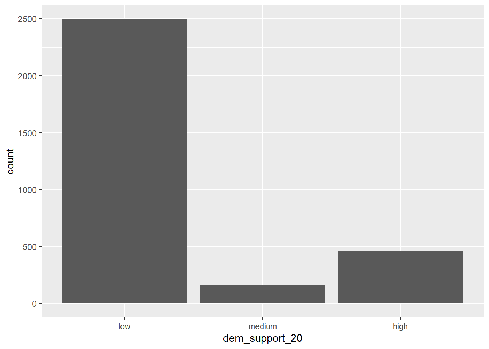
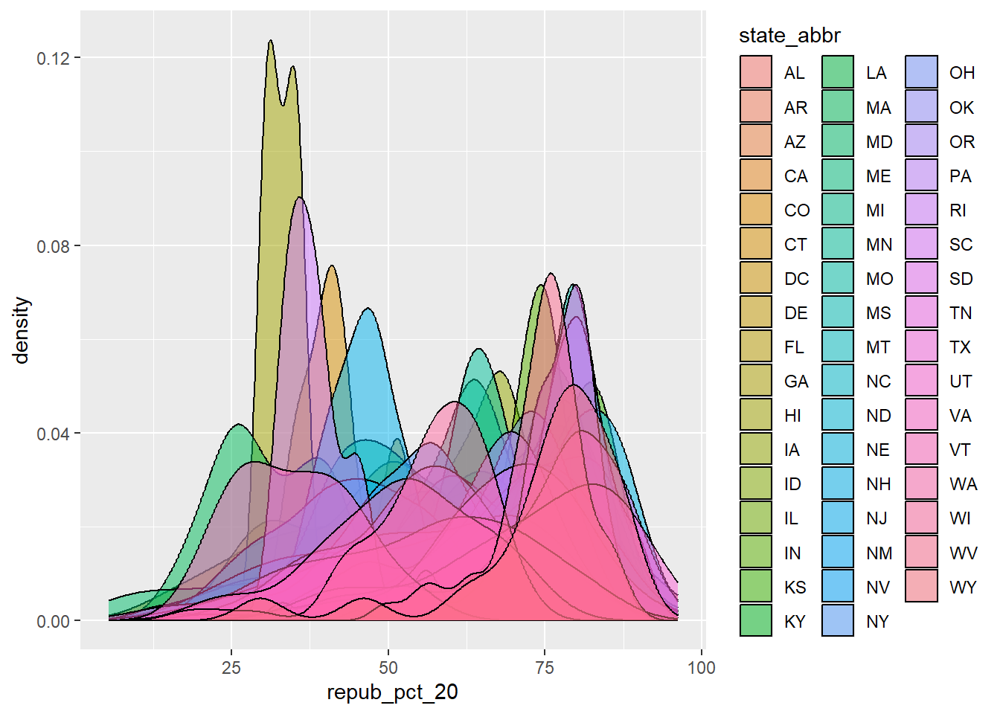
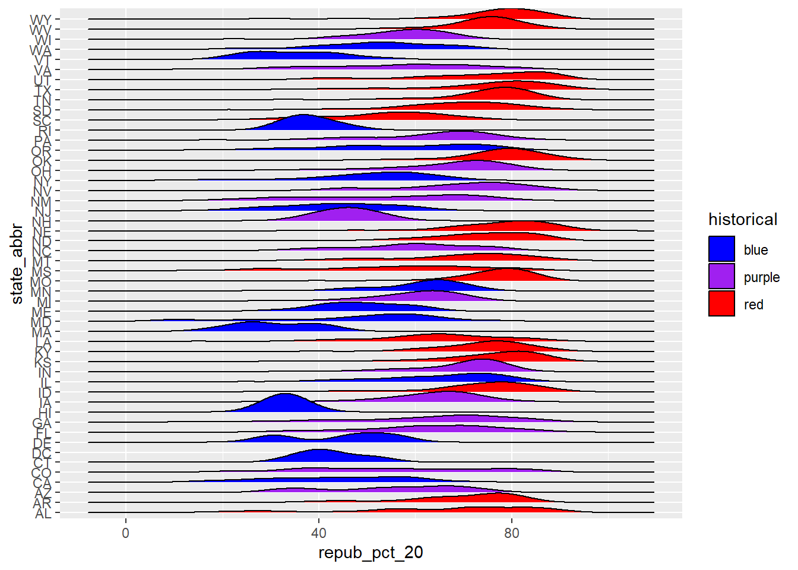
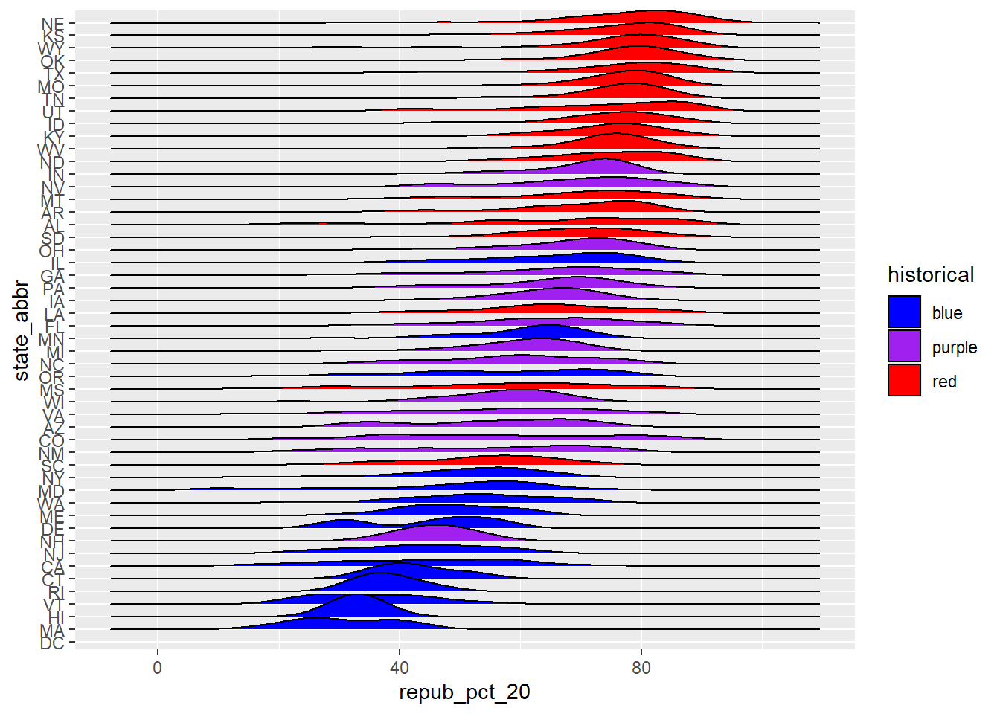
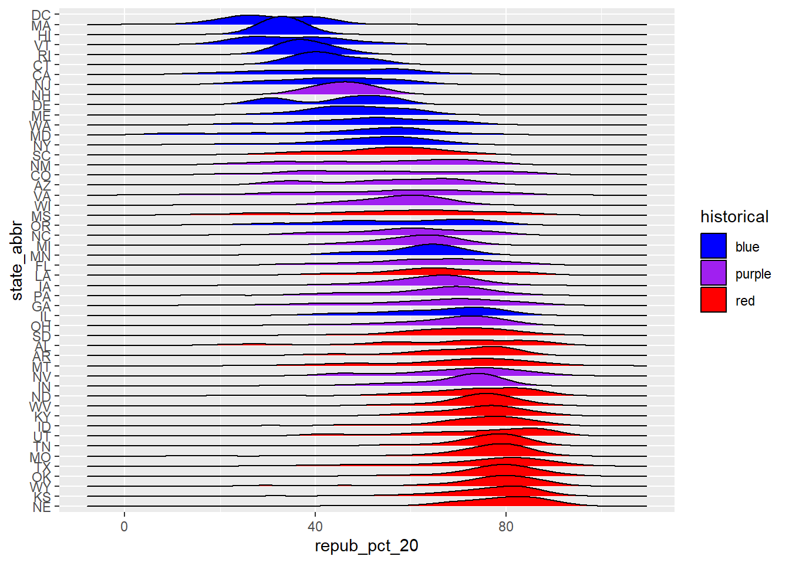
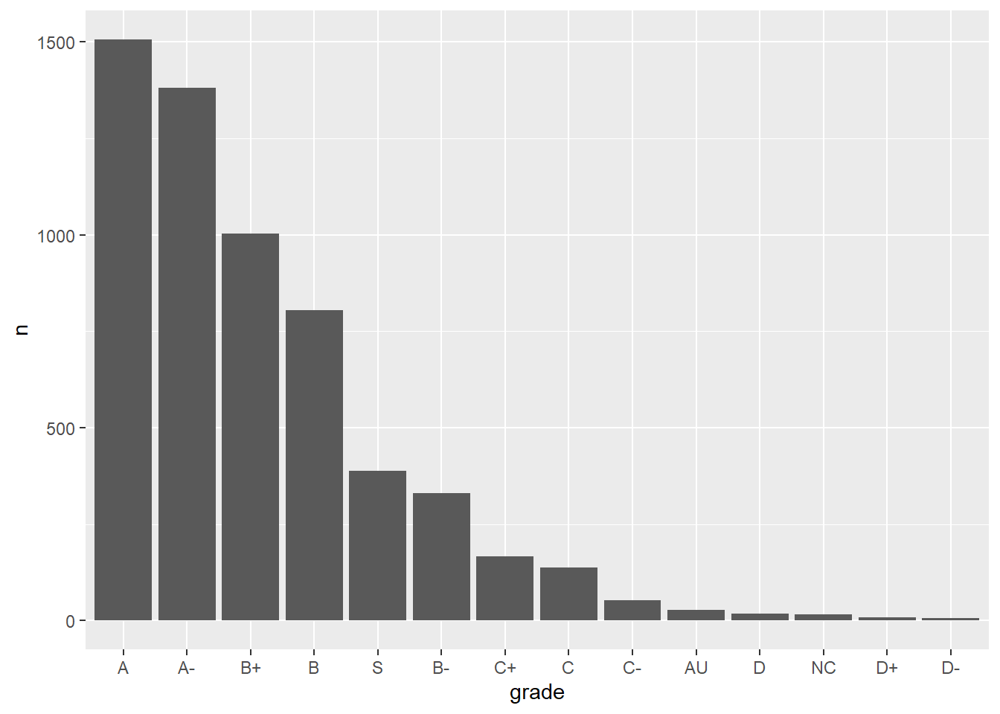
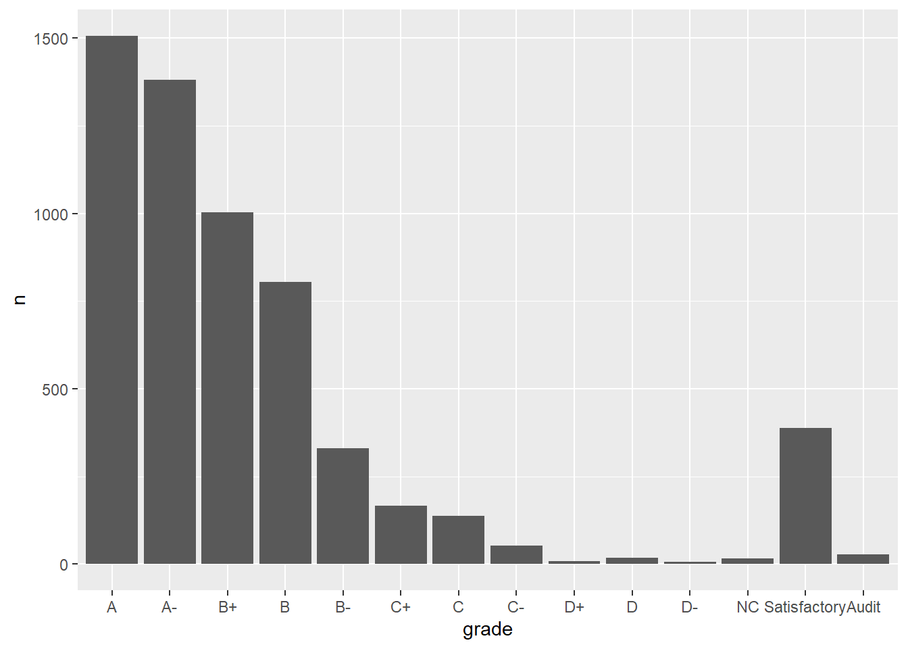

state_abbr historical county_name total_votes_20 repub_pct_20 dem_pct_20
1 AL red Autauga County 27770 71.44 27.02
2 AL red Baldwin County 109679 76.17 22.41
3 AL red Barbour County 10518 53.45 45.79
4 AL red Bibb County 9595 78.43 20.70
5 AL red Blount County 27588 89.57 9.57
6 AL red Bullock County 4613 24.84 74.70
dem_support_20
1 low
2 low
3 low
4 low
5 low
6 high
dem_support_20 n
1 high 458
2 low 2494
3 medium 157
Example 2: Change Order using fct_relevel
str(elections)
'data.frame': 3109 obs. of 7 variables:
$ state_abbr : chr "AL" "AL" "AL" "AL" ...
$ historical : chr "red" "red" "red" "red" ...
$ county_name : chr "Autauga County" "Baldwin County" "Barbour County" "Bibb County" ...
$ total_votes_20: int 27770 109679 10518 9595 27588 4613 9488 50983 15284 12301 ...
$ repub_pct_20 : num 71.4 76.2 53.5 78.4 89.6 ...
$ dem_pct_20 : num 27.02 22.41 45.79 20.7 9.57 ...
$ dem_support_20: chr "low" "low" "low" "low" ...
# Notice that the order of the levels is not alphabetical!elections <- elections |>mutate(dem_support_20 =fct_relevel(dem_support_20, c("low", "medium", "high")))# Notice the new structure of the dem_support_20 variablestr(elections)
# And plot dem_support_20ggplot(elections, aes(x = dem_support_20)) +geom_bar()

Example 3: Change Labels using fct_recode
elections |>count(dem_support_20)
dem_support_20 n
1 low 2494
2 medium 157
3 high 458
# We can redefine any number of the category labels.# Here we'll relabel all 3 categories:elections <- elections |>mutate(results_20 =fct_recode(dem_support_20, "strong republican"="low","close race"="medium","strong democrat"="high"))# Check it out# Note that the new category labels are still in a meaningful,# not necessarily alphabetical, order!elections |>count(results_20)
results_20 n
1 strong republican 2494
2 close race 157
3 strong democrat 458
Example 4: Re-order Levels using fct_relevel
# Note that we're just piping the data into ggplot instead of writing# it as the first argumentelections |>ggplot(aes(x = repub_pct_20, fill = state_abbr)) +geom_density(alpha =0.5)
Warning: Groups with fewer than two data points have been dropped.
Warning in max(ids, na.rm = TRUE): no non-missing arguments to max; returning
-Inf

library(ggridges)elections |>ggplot(aes(x = repub_pct_20, y = state_abbr, fill = historical)) +geom_density_ridges() +scale_fill_manual(values =c("blue", "purple", "red"))
Picking joint bandwidth of 4.43

Example 5: Re-order levels Based on Another Variable using fct_reorder
# Since we might want states to be alphabetical in other parts of our analysis,# we'll pipe the data into the ggplot without storing it:elections |>mutate(state_abbr =fct_reorder(state_abbr, repub_pct_20, .fun ="median")) |>ggplot(aes(x = repub_pct_20, y = state_abbr, fill = historical)) +geom_density_ridges() +scale_fill_manual(values =c("blue", "purple", "red"))
Picking joint bandwidth of 4.43

# How did the code change?# And the corresponding output?elections |>mutate(state_abbr =fct_reorder(state_abbr, repub_pct_20, .fun ="median", .desc =TRUE)) |>ggplot(aes(x = repub_pct_20, y = state_abbr, fill = historical)) +geom_density_ridges() +scale_fill_manual(values =c("blue", "purple", "red"))
Picking joint bandwidth of 4.43

Exercises
# Get rid of some duplicate rows!grades <-read.csv("https://mac-stat.github.io/data/grades.csv") |>distinct(sid, sessionID, .keep_all =TRUE)# Check it outhead(grades)
grade_distribution |>mutate(grade =fct_reorder(grade, n, .desc=TRUE)) |>ggplot(aes(x = grade, y = n)) +geom_col()

Exercise 2: Changing Factor Level Labels
grade_distribution |>mutate(grade =fct_relevel(grade, c("A", "A-", "B+", "B", "B-", "C+", "C", "C-", "D+", "D", "D-", "NC", "S", "AU"))) |>mutate(grade =fct_recode(grade, "Satisfactory"="S", "Audit"="AU")) |># Multiple pieces go into the last 2 blanksggplot(aes(x = grade, y = n)) +geom_col()

Source Code
---title: "Factors"---Example 1: Default Order```{r}library(tidyverse)elections <-read.csv("https://mac-stat.github.io/data/election_2020_county.csv") |>select(state_abbr, historical, county_name, total_votes_20, repub_pct_20, dem_pct_20) |>mutate(dem_support_20 =case_when( (repub_pct_20 - dem_pct_20 >=5) ~"low", (repub_pct_20 - dem_pct_20 <=-5) ~"high",.default ="medium" ))# Check it outhead(elections) ``````{r}ggplot(elections, aes(x = dem_support_20)) +geom_bar()``````{r}elections |>count(dem_support_20)```Example 2: Change Order using fct_relevel```{r}str(elections)``````{r}# Notice that the order of the levels is not alphabetical!elections <- elections |>mutate(dem_support_20 =fct_relevel(dem_support_20, c("low", "medium", "high")))# Notice the new structure of the dem_support_20 variablestr(elections)``````{r}# And plot dem_support_20ggplot(elections, aes(x = dem_support_20)) +geom_bar()```Example 3: Change Labels using fct_recode```{r}elections |>count(dem_support_20)``````{r}# We can redefine any number of the category labels.# Here we'll relabel all 3 categories:elections <- elections |>mutate(results_20 =fct_recode(dem_support_20, "strong republican"="low","close race"="medium","strong democrat"="high"))# Check it out# Note that the new category labels are still in a meaningful,# not necessarily alphabetical, order!elections |>count(results_20)```Example 4: Re-order Levels using fct_relevel```{r}# Note that we're just piping the data into ggplot instead of writing# it as the first argumentelections |>ggplot(aes(x = repub_pct_20, fill = state_abbr)) +geom_density(alpha =0.5)``````{r}library(ggridges)elections |>ggplot(aes(x = repub_pct_20, y = state_abbr, fill = historical)) +geom_density_ridges() +scale_fill_manual(values =c("blue", "purple", "red"))```Example 5: Re-order levels Based on Another Variable using fct_reorder```{r}# Since we might want states to be alphabetical in other parts of our analysis,# we'll pipe the data into the ggplot without storing it:elections |>mutate(state_abbr =fct_reorder(state_abbr, repub_pct_20, .fun ="median")) |>ggplot(aes(x = repub_pct_20, y = state_abbr, fill = historical)) +geom_density_ridges() +scale_fill_manual(values =c("blue", "purple", "red"))``````{r}# How did the code change?# And the corresponding output?elections |>mutate(state_abbr =fct_reorder(state_abbr, repub_pct_20, .fun ="median", .desc =TRUE)) |>ggplot(aes(x = repub_pct_20, y = state_abbr, fill = historical)) +geom_density_ridges() +scale_fill_manual(values =c("blue", "purple", "red"))```Exercises```{r}# Get rid of some duplicate rows!grades <-read.csv("https://mac-stat.github.io/data/grades.csv") |>distinct(sid, sessionID, .keep_all =TRUE)# Check it outhead(grades)``````{r}grade_distribution <- grades |>count(grade)head(grade_distribution)```Exercise 1: Changing Order```{r}grade_distribution |>ggplot(aes(x = grade, y = n)) +geom_col()``````{r}grade_distribution |>mutate(grade =fct_relevel(grade, c("A", "A-", "B+", "B", "B-", "C+", "C", "C-", "D+", "D", "D-", "NC", "S", "AU"))) |>ggplot(aes(x = grade, y = n)) +geom_col()``````{r}grade_distribution |>mutate(grade =fct_reorder(grade, n)) |>ggplot(aes(x = grade, y = n)) +geom_col()``````{r}grade_distribution |>mutate(grade =fct_reorder(grade, n, .desc=TRUE)) |>ggplot(aes(x = grade, y = n)) +geom_col()```Exercise 2: Changing Factor Level Labels```{r}grade_distribution |>mutate(grade =fct_relevel(grade, c("A", "A-", "B+", "B", "B-", "C+", "C", "C-", "D+", "D", "D-", "NC", "S", "AU"))) |>mutate(grade =fct_recode(grade, "Satisfactory"="S", "Audit"="AU")) |># Multiple pieces go into the last 2 blanksggplot(aes(x = grade, y = n)) +geom_col()```